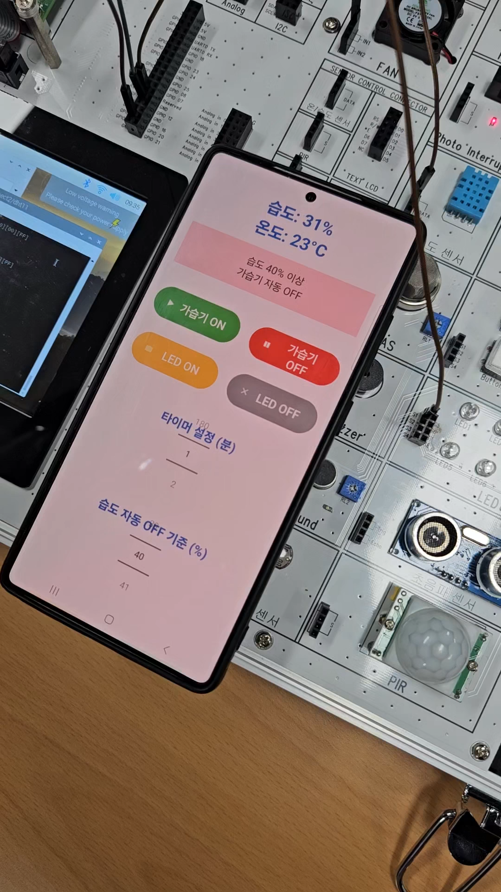
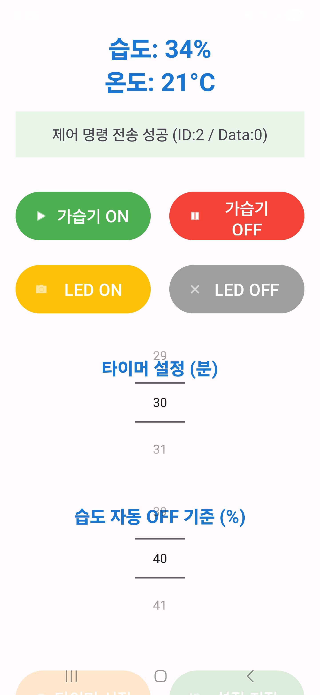
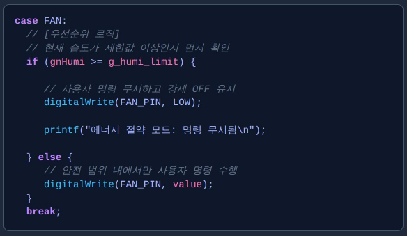

15바이트 고정 길이 패킷을 TCP/IP 소켓 위에서 직접 설계해, 라즈베리파이(하드웨어)와 안드로이드 앱(클라이언트) 간 신뢰성 있는 양방향 통신을 구현했습니다. 2인 팀 프로젝트, 팀장(조장)으로 통신 프로토콜 설계와 서버 로직을 전담했습니다. (2025.12)
STX/ID/Data/ETX 구조의 15바이트 패킷을 정의하고 C 구조체로 구현.
DHT11 센서를 소프트웨어적으로 직접 제어해 40비트 신호 처리.
pthread로 메인 서버 루프를 막지 않는 비동기 타이머 구현.
습도 상한값과 실시간 습도를 비교해 불필요한 명령을 소프트웨어적으로 차단.


